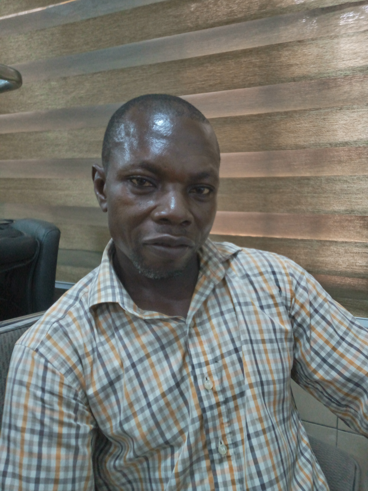

Lucky Ayei Inyang Eni | WDD 130

Hello there! I'm Lucky Eni, a passionate web development student who loves crafting beautiful and functional websites. When I'm not coding, you'll find me on the street exercising or capturing the beauty of nature through my camera lens. Let's build something amazing together!